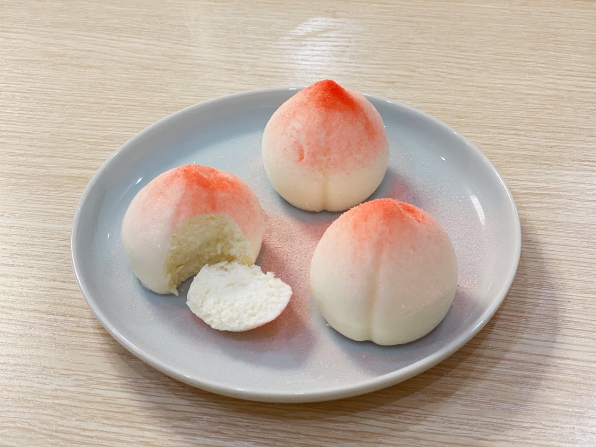
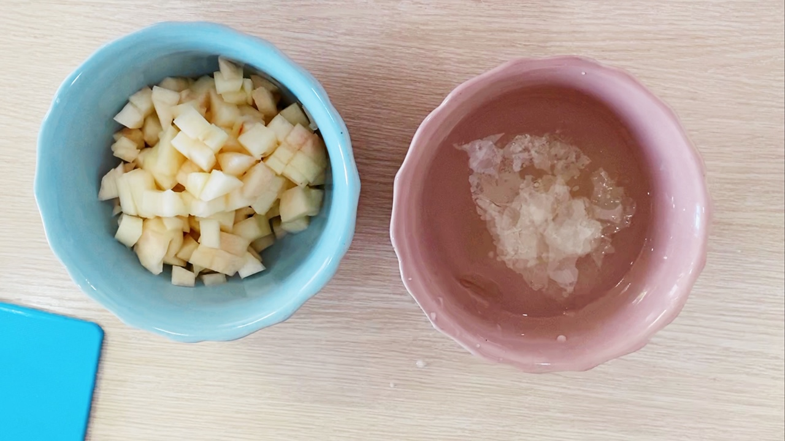
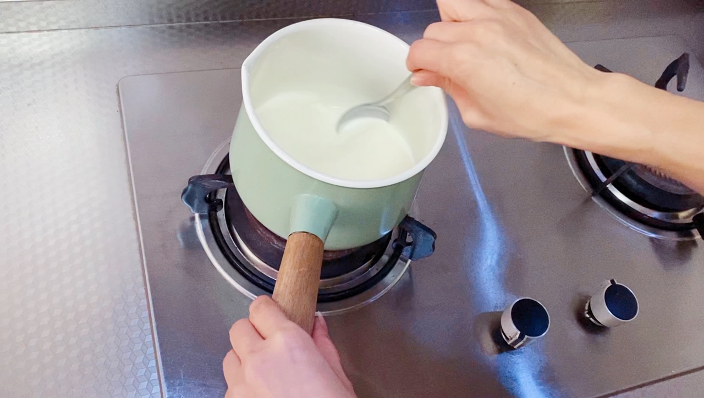
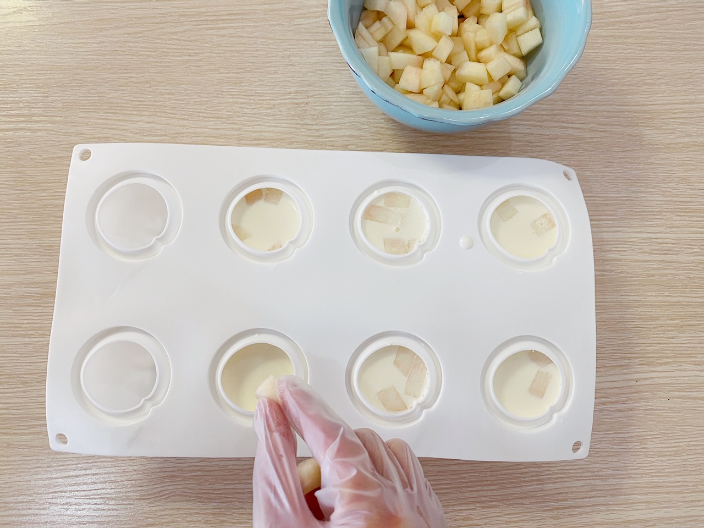
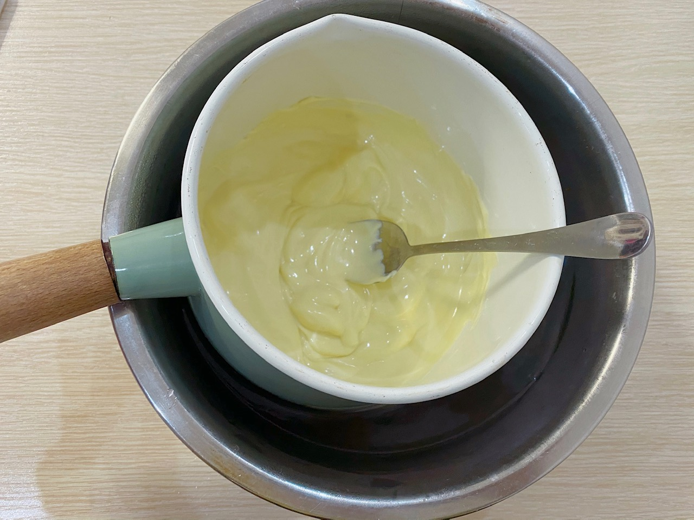
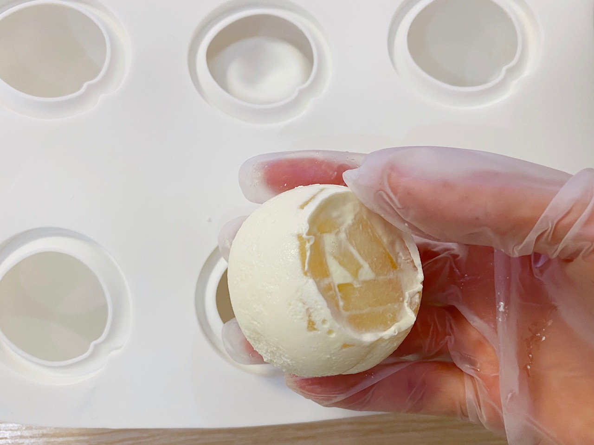
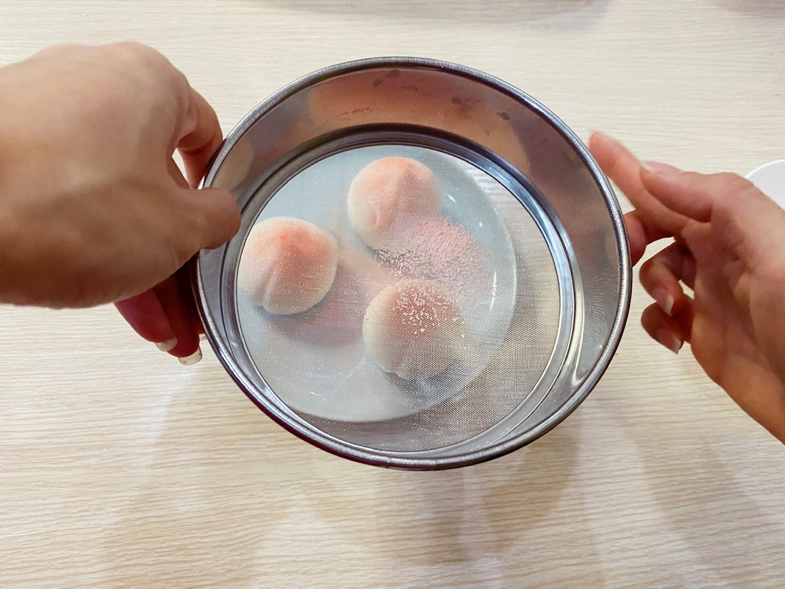

White Peach Mouse Cake
Ingredients
- 1 White peach
- 10g Gelatin
- 200ml Milk
- 100ml Heavy Cream
- 15g Sugar
- 500g White Chocolate
- 1 tbsp Strawberry Powder
Instructions
-
Step1: Peel or slice a peach then dice it. Put gelatin into ice water(8 minutes)
 -
Step2: Put milk, light cream and sugar into a pot, then boil them until slightly smoky. Add gelatin into the pot and stir it until smooth
 -
Step3: Pour the liquid into the moulds and add peach dices. Put it into fridge and frozen it six hours
 -
Step4: Melt the white chocolate in a pot until smooth
 -
Step5: Carefully take the mousse cakes out of the moulds and coat the mousse cakes with melted white chocolate
 -
Step6: Get your serving dish and dust with strawberry powder
 -
Step7: Enjoy your dessert